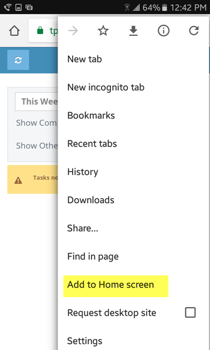
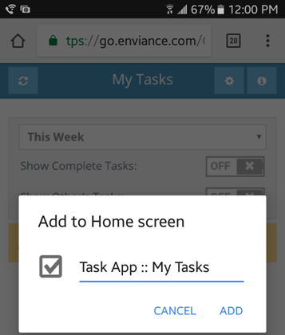
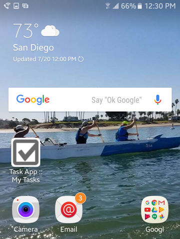
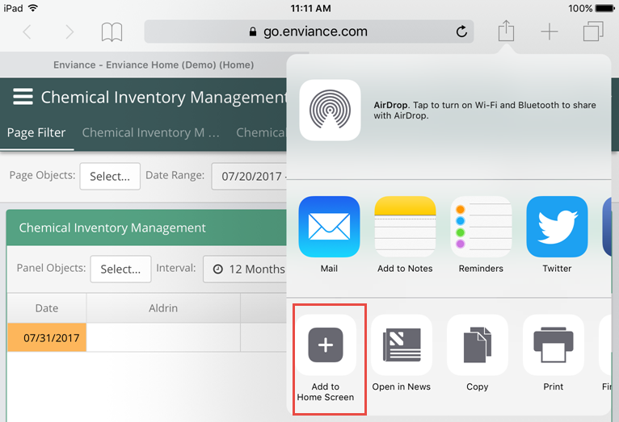
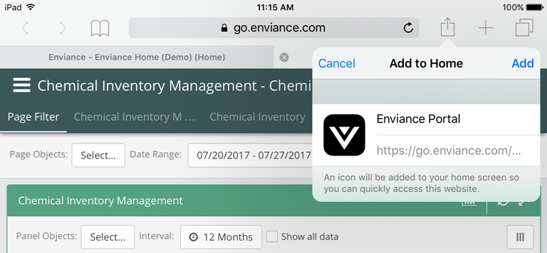

You can create a link to an App on the home screen of your phone or tablet and use it just like any other app on your device.
First, you'll need to get the link to the App you want. You can do this easily by using the browser on your device to navigate to Advanced Calculations (EMS). Log in, then launch the App you want to access on your mobile device. Find the instructions for creating the app icon on your home screen, depending on your device below.
Tap the menu button and tap Add to Home screen.

Tap Add.
You can rename the shortcut.

The icon will appear on your home screen like any other app shortcut or widget, so you can drag it around and put it wherever you like.

Other popular Android browsers also offer this feature, although the menu options may be slightly different.
Tap the Share button on the browser's toolbar.

Tap the Add to Home Screen icon in the Share menu and tap Add.

The icon can be dragged around and placed anywhere, including in app folders, just like any app icon. When you tap the icon, it will load the website in a normal tab inside the Safari browser app.
Windows devices also offer a way to pin websites to your Start screen. This is obviously most useful on tablets. On the Windows desktop, you can pin website shortcuts to your taskbar for easier access.
Tap the pin icon, enter a name for the shortcut, and click Pin to Start.
The website will appear as a tile on your Start screen. Tap the tile and the website will open in Edge.
If you have another type of smart phone or tablet, open its browser and look in the menu for an option named something like “Add to home screen” or “Pin to home screen”.